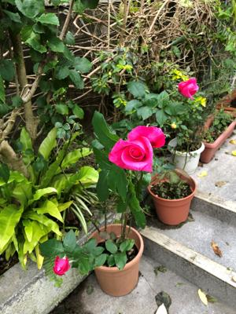
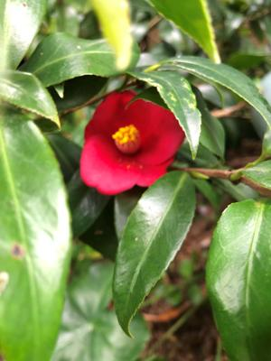
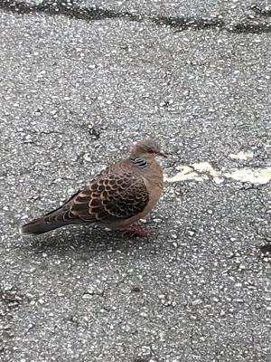

うるがいの話 ある日
最新: 車庫証明【うるがいの話 ある日】とは 一日だけのプログです
『うるがいの話』の最新一日だけのプログで、通信料が少なく経済的だ。カニの画像をクリックすると全ての日付が載る『うるがいの話』サイトを表示します
|
|
【うるがいの話】 うるがい(ｳﾙｶﾞｲ urugai)とは、『もずくがに』の名前でとても大きくなります。 |
|---|---|
|
|
【カミマヤーの話】 猫のことを方言でマヤーといいます。カミマヤー（kamimayaa）とは、神の猫のことです。 |
|
【たながぁの音楽】 たながぁ（ﾀﾅｶﾞｰtanagaa）とは手長えびのことで、何種類かあり大きいのは車 エビぐらいになります。 |

|
【ぶながぁの話】 ぶながー(bunagaa)とは、赤い髪の毛、赤い身体、そして身長は１ｍ２０ｃｍ ぐらい、川の蟹を食べているの目撃された。場所は沖縄県国頭郡大宜味村のと ある村僕の隣近所に住んでいる爺さんから、聞いた話です。 |
|
|
【ギーマの話】 ギーマ(giima)とは、山原の里山に咲くスズランに似た、 花を付けます。実は食べられます、 気が付くと口の周りが紫になっています。 |
2022年02月19日 (土）車庫証明
15:54
  
トヨタの販売店から、車庫証明の警察署へ申請をしたら実写（申請の車種の３
台が駐車していること）を撮って来るようにと言われたと。さては疑われたか
３台を停めたことはない！、２０年前に普通乗車を横並びで停めたことがある
が、大丈夫だろうか。予め鉢などを移動させ駐車スペースを確保、借りている
アクア（そうそう、３日前にヤリスからアクアに変わった）を、事前に調整し
ていた販売店の店員が持ってくる今回購入したアクシオが、並列して止められ
る間隔を空けて停める（かなり苦労した）。そして、子供が軽自動車を乗って
きてそれを実勢のある奥のスペースに停める。やがて、アクシオが打ち合わせ
ていた時間に到着、あっさり空いている場所に駐車した。ほっ、店員さんも意
外とスペースあるのですネと、指定された写真を数枚とった無事ミッション終
了。ネットで車庫証明に写真は必要かと検索したが、探すことはできなかった
ただ、警察が現地を見るとことはあると、あるので面倒くさいので写真で代行
したのではと思った。私以外にも、別のお客さんも同様に写真の提示を求めら
れたとのこと。きのうあの雨の中、ディスクトップが配送されてきた。予定で
は来週の月曜日だったが、でもいろいろあってまだスイッチを入れていない。
１５時５１分 ビットコインの総資産 ￥１３、４６７↓